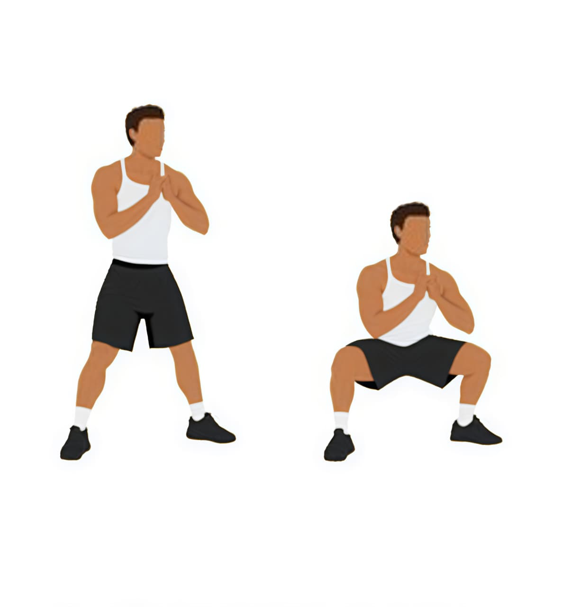

Squats are performed by standing with your feet shoulder-width apart, keeping your chest up and back straight, then bending your knees and hips to lower your body as if sitting into a chair until your thighs are parallel to the ground, followed by pushing through your heels to return to standing. They primarily target the quadriceps, hamstrings, glutes, and calves, while also engaging the core for balance and stability. The benefits include building lower body strength and muscle mass, improving mobility and balance, boosting athletic performance, and enhancing overall functional movement for daily activities.

2:Calf Raises
Calf raises are performed by standing upright with your feet hip-width apart, then slowly lifting your heels off the ground by pushing through the balls of your feet until you’re on your toes, holding briefly at the top, and lowering back down under control. They primarily target the calf muscles, specifically the gastrocnemius and soleus, and also engage the stabilizing muscles of the ankles and feet. The benefits include increasing calf strength and definition, improving ankle stability and balance, enhancing running and jumping performance, and reducing the risk of lower leg injuries.

3:Nordic Curls
Nordic curls are performed by kneeling on a soft surface with your feet anchored securely under a stable object or held by a partner, then slowly lowering your upper body forward by extending your knees while keeping your hips straight, using your hamstrings to control the descent, and pushing yourself back up to the starting position. They primarily target the hamstrings, while also engaging the glutes, calves, and lower back for stability. The benefits include building eccentric hamstring strength, improving knee stability, enhancing sprinting and jumping performance, and reducing the risk of hamstring strains or injuries.